Equipamento Hospitalar de Urgência
Composição do Carrinho de Emergência
Guia completo sobre a estrutura, medicamentos, materiais e rotinas de conferência do carrinho de emergência. Parecer COREN-SP nº 010/2022 e padrões quantitativos de medicamentos e materiais dos Hospitais Federais.

Cardioversor/Desfibrilador — clique na imagem para ampliar
Informações Gerais
Função
Estrutura móvel com medicamentos, materiais e equipamentos para atendimento de PCR e emergências clínicas.
Tempo Crítico
A cada minuto sem intervenção, a chance de sobrevida na PCR cai cerca de 10%.
Desfibrilação Precoce
Realizada em até 3-5 minutos do início da PCR, a taxa de sobrevida chega a 50-70% (SBC, 2019).
Bancada Superior (Topo)
Desfibrilador/Cardioversor
Equipamento para desfibrilação e cardioversão elétrica.
Laringoscópios + Lâminas
Cabos e lâminas de intubação (curvas e retas) em caixa própria.
Material de Intubação + Formulário
Fio guia, seringa para cuff e formulário de controle.

Carrinho de Emergência — clique na imagem para ampliar
Composição por Gavetas
Adrenalina
1 mg/mL — 1 mL
Qtd: 20 ampolas
Alta Vigilância
Amiodarona
50 mg/mL — 3 mL
Qtd: 6 ampolas
Atropina
0,25 mg/mL — 1 mL
Qtd: 10 ampolas
Adenosina
3 mg/mL — 2 mL
Qtd: 5 ampolas
Noradrenalina
1 mg/mL — 4 mL
Qtd: 10 ampolas
Alta Vigilância
Dopamina
5 mg/mL — 10 mL
Qtd: 3 ampolas
Midazolam
5 mg/mL — 10 mL
Qtd: 12 ampolas
Fentanil
0,05 mg/mL — 10 mL
Qtd: 12 ampolas
Água Destilada
10 mL
Qtd: 10 ampolas
Bicarbonato Na 8,4%
10 mL
Qtd: 5 ampolas
Cloreto de Potássio 10%
10 mL
Alta Vigilância
Deslanosídeo
0,2 mg/mL — 2 mL
Qtd: 3 ampolas
Dexametasona
4 mg/mL — 2,5 mL
Qtd: 3 ampolas
Diazepam
5 mg/mL — 2 mL
Qtd: 3 ampolas
Dobutamina
12,5 mg/mL — 20 mL
Qtd: 3 ampolas
Fenitoína Sódica
50 mg/mL — 5 mL
Qtd: 5 ampolas
+ Ver lista completa de medicamentos (30 itens)
Jelco nº 14 a 24
Cateter intravenoso
Qtd: 2 de cada calibre
Agulha 40×12
Agulha hipodérmica
Qtd: 10 unidades
Agulha 30×8
Agulha hipodérmica
Qtd: 10 unidades
Seringa 10 mL
Seringa descartável
Qtd: 10 unidades
Seringa 20 mL
Seringa descartável
Qtd: 5 unidades
Seringa 5 mL
Seringa descartável
Qtd: 3 unidades
Polifix (2 vias)
Dispositivo intermediário
Qtd: 3 unidades
Torneira 3 Vias
Dânula
Qtd: 2 unidades
Equipo Macrogotas
Equipo padrão
Qtd: 5 unidades
Equipo Microgotas
Câmara graduada
Qtd: 2 unidades
Equipo Bomba Infusão
BI parenteral
Qtd: 3 unidades
Equipo Fotossensível
Protegido da luz
Qtd: 1 unidade
Eletrodo Descartável
Adulto, para monitor
Qtd: 20 unidades
Gel Condutor
Para desfibrilação
Qtd: 1 unidade
Lâmina Bisturi 22
Corte cirúrgico
Qtd: 2 unidades
Garrote + Esparadrapo
Acesso venoso
Qtd: 1 cada
Ambú c/ Máscara
Ressuscitador manual
Qtd: 1 unidade
TOT nº 3,0 ao 9,0
Tubo orotraqueal
Qtd: 2 de cada nº
Cânula Guedel
Via aérea orofaríngea
Qtd: 3 unidades
Sonda Aspiração 4 a 14
Aspiração traqueal
Qtd: 2 de cada nº
Luvas Estéreis 7,0 ao 8,5
Procedimento
Qtd: 2 de cada nº
Cânula TQT 7,0 ao 9,0
Traqueostomia
Qtd: 2 de cada nº
Circuito Respirador
Ventilação mecânica
Qtd: 1 unidade
Filtro Bacteriológico
Barreira (HME)
Qtd: 1 unidade
Fixador de TOT
Cadarço para fixação
Qtd: 2 unidades
Umidificador + Extensor
Oxigenoterapia
Qtd: 1 de cada
Frasco de Aspiração
Sistema fechado
Qtd: 1 unidade
Trach Care
Higiene TQT
Qtd: 1 unidade
SF 0,9% 100 mL
Solução fisiológica
Qtd: 2 unidades
SF 0,9% 250 mL
Solução fisiológica
Qtd: 2 unidades
SF 0,9% 500 mL
Solução fisiológica
Qtd: 2 unidades
SG 5% 500 mL
Solução glicosada
Qtd: 1 unidade
SG 10% 500 mL
Solução glicosada
Qtd: 1 unidade
Ringer Lactato 500 mL
Solução cristaloide
Qtd: 2 unidades
Bicarbonato 8,4% 250 mL
Alcalinizante
Qtd: 2 frascos
Água Destilada 250 mL
Diluente estéril
Qtd: 1 unidade
Voluven 6% 500 mL
Hidroxietilamido
Qtd: 2 unidades
Lidocaína Gel
Lubrificante tópico
Qtd: 1 unidade
Gaze Estéril
Curativo/procedimento
Qtd: 5 pacotes
Micropore
Fita adesiva
Qtd: 1 unidade
Como Identificar Cada Gaveta
Gaveta 1 (Topo)
Medicamentos — com nomes, doses e validade visível.
Gaveta 2
Acesso vascular — Jelcos, agulhas, seringas, equipos.
Gaveta 3
Vias aéreas — TOT, Guedel, Ambú, sondas de aspiração.
Gaveta 4 (Inferior)
Soluções e soros — SF, SG, Ringer, bicarbonato, Voluven.
Outros Materiais que Compõem o Carrinho de Emergência
Cilindro de oxigênio cheio
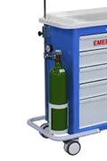
Cabo de laringoscópios e lâminas
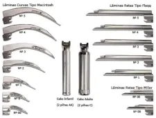
Prancha de compressões torácicas
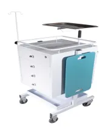
AMBU
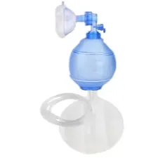
Fio guia ou Bougie
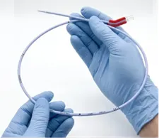
Rotinas de Conferência e Manutenção
Periodicidade das Verificações
- Diariamente (turno da manhã): Teste funcional do desfibrilador.
- A cada plantão: Conferência do lacre, teste do laringoscópio (encaixe do cabo na lâmina, pilha e lâmpada) e verificação do cilindro de O₂.
- Mensalmente: Conferência completa de materiais (enfermeiro) e medicamentos (farmacêutico/técnico de farmácia).
- Sempre que o lacre for rompido: Reposição imediata de todo material/medicamento utilizado.
- Limpeza: Terminal logo após o término do atendimento. Laringoscópios limpos a cada plantão com compressa embebida em álcool 70%.
Regras de Validade, Lote e Lacre
- O carro quando não estiver em uso deverá estar lacrado.
- O lacre é retirado apenas em urgência/emergência ou para conferência.
- Medicamentos vencidos devem ser encaminhados à farmácia para descarte correto.
- Cada gaveta deve ter identificação externa dos materiais nela contidos.
- Medicamentos de Alta Vigilância devem estar sinalizados.
- O carro NÃO deve ser utilizado em situações de rotina.
Checklist Diário de Conferência
Matriz de Responsabilidades
- Enfermeiro Rotina: Conferir e repor medicamentos e materiais; conferir lacre diariamente.
- Enfermeiro Plantonista: Testagem do desfibrilador e laringoscópios.
- Médico: Prescrever medicamentos utilizados para reposição.
- Farmácia: Dispensar medicamentos, conferir validade e sinalizar Alta Vigilância.
Situações de Abertura do Carrinho
- 1
Parada cardiorrespiratória (PCR).
- 2
Comprometimento das vias aéreas/ventilação.
- 3
Choque e instabilidade hemodinâmica.
- 4
Crises hipertensivas e edema agudo de pulmão.
- 5
Perda súbita do nível de consciência.
- 6
Outras urgências e emergências clínicas.
Dados Críticos (PCR)
A PCR é uma das emergências de maior prevalência e morbimortalidade. Os dados abaixo reforçam a importância do carrinho bem equipado:
- A cada minuto sem RCP: chance de sobrevida cai ~10%.
- PCR extra-hospitalar: FV/TV em ~80% dos casos. Desfibrilação em 3-5 min = 50-70% sobrevida.
- PCR intra-hospitalar: predomínio de AESP/assistolia, sobrevida inferior a 17%.
Medicamentos de Alta Vigilância
Dupla checagem obrigatória — risco aumentado de dano ao paciente em caso de erro.
Medicamentos para Via Aérea Avançada e Manutenção
Kit de Intubação: classes e apresentações conforme relação do Ministério da Saúde, CONASS e CONASEMS.
| Classe | Medicamentos |
|---|---|
| Anestésico local Sequência rápida de intubação | Lidocaína 20 mg/mL (2%) sem vasoconstrictor 20 mL 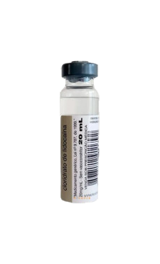 |
| Ansiolítico | Diazepam 5 mg/mL 2 mL 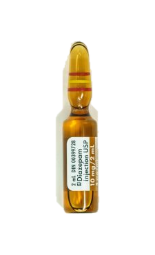 |
| Bloqueador neuromuscular Manutenção da intubação | Atracúrio, besilato 10 mg/mL 2,5 mL 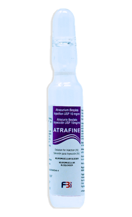 Atracúrio, besilato 10 mg/mL 5 mL 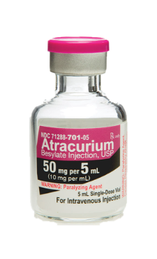 Cisatracúrio, besilato 2 mg/mL 5 mL 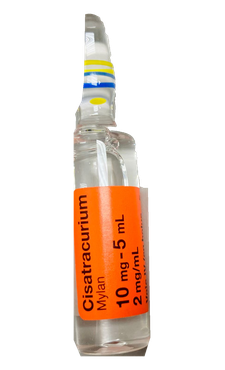 Cisatracúrio, besilato 2 mg/mL 10 mL 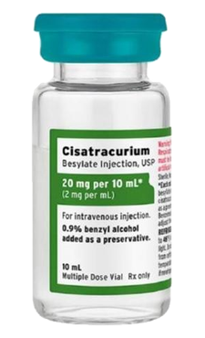 Rocurônio, brometo 10 mg/mL 5 mL 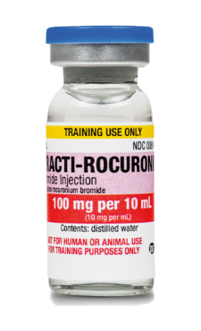 |
| Bloqueador neuromuscular Sequência rápida de intubação | Suxametônio, cloreto 100 mg 10 mL 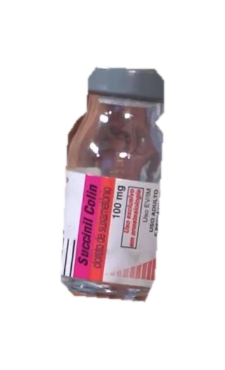 |
| Fármaco antídoto | Naloxona, cloridrato 0,4 mg/mL 1 mL 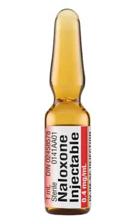 |
| Fármaco para controle de delírio | Haloperidol 5 mg/mL 1 mL 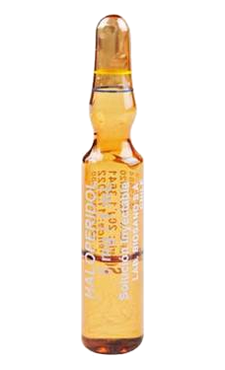 |
| Fármaco para sedação contínua | Midazolam 5 mg/mL 10 mL 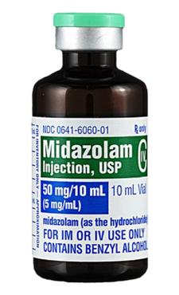 Propofol 10 mg/mL 100 mL 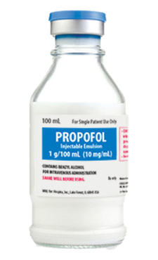 Propofol 10 mg/mL 20 mL 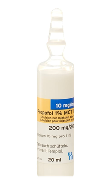 |
| Fármaco para sedação contínua / controle de delírio | Dexmedetomidina, cloridrato 100 mcg/mL 2 mL 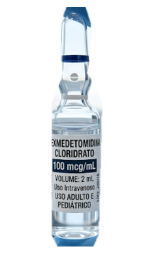 |
| Fármacos para analgesia | Dextrocetamina, cloridrato 50 mg/mL 10 mL 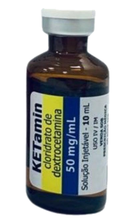 Fentanila, citrato 0,05 mg/mL 10 mL 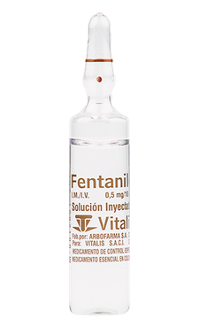 Morfina, sulfato 10 mg/mL 1 mL 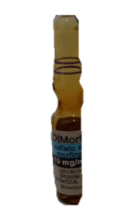 |
| Fármacos vasoativos | Atropina, sulfato 0,25 mg/mL 1 mL 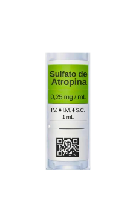 Epinefrina 1 mg/mL 1 mL 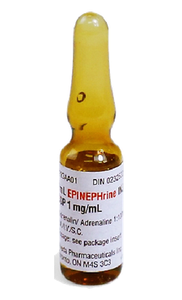 Norepinefrina 1 mg/mL 4 mL 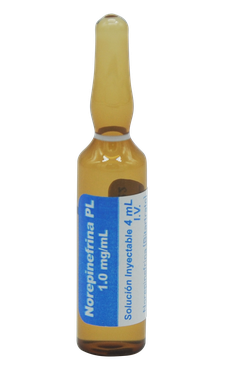 |
| Sedativo Sequência rápida de intubação | Etomidato 2 mg/mL 10 mL 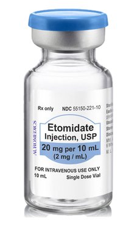 |
SÃO PAULO (Estado). Secretaria de Estado da Saúde. Coordenadoria de Assistência Farmacêutica. Anexo 02: Kit Intubação, proposto pelo Ministério da Saúde, em parceria com o CONASS e CONASEMS. [S. l.: s. n.], [s. d.]. Disponível em: abrir PDF. Acesso em: 2 ago. 2026.
Normas e Regulamentações
Parecer COREN-SP nº 010/2022 — Pontos Principais
- Responsabilidade do Enfermeiro: No âmbito da equipe de enfermagem, a montagem, conferência e reposição de materiais do carro de emergência é de responsabilidade do enfermeiro (Lei nº 7.498/86, Art. 11).
- Supervisão: Técnicos e auxiliares de enfermagem podem realizar conferência e reposição, desde que sob supervisão do enfermeiro.
- Responsabilidade Compartilhada: Recomenda-se que o controle dos itens seja compartilhado com farmácia e logística, garantindo reposição, controle de quantidades, integridade física e validade.
- Conferência Diária: Obrigatória a conferência do lacre, lâminas de intubação, teste do desfibrilador, quantidade de O₂ e demais itens que garantam a funcionalidade do CE.
- Parecer Cofen nº 24/2018: Ratifica que o enfermeiro tem responsabilidade sobre controle, reposição e conferência do carro de emergência e supervisão dos profissionais de nível médio.
- Resolução Cofen nº 358/2009: Todo cuidado de enfermagem deve ser baseado no Processo de Enfermagem e Sistematização da Assistência (SAE).
- Equipe Multiprofissional: A assistência ao paciente grave é multidisciplinar; as atividades devem estar regimentadas e protocoladas institucionalmente.
Resolução/Portaria de Referência
- Portaria MS nº 354/2014: Dispõe sobre boas práticas para funcionamento de serviços de urgência — exige que equipamentos para reanimação e medicamentos para emergência estejam disponíveis.
- Lei nº 7.498/86: Regulamentação do Exercício da Enfermagem — Art. 11: cabe ao enfermeiro o planejamento, organização, coordenação, execução e avaliação dos serviços de assistência de enfermagem.
- Resolução Cofen nº 564/2017: Código de Ética dos Profissionais de Enfermagem.
- EBSERH — Protocolo Carro de Emergência (2017): Padronização multiprofissional para hospitais universitários federais.
Pareceres e Protocolos
Documentos técnicos para download com a fundamentação legal e operacional completa:
Veja Também
5 Hs da Parada Cardiorrespiratória
Hipovolemia, Hipóxia, H+ (acidose), Hipo/Hipercalemia e Hipotermia.
5 Ts da Parada Cardiorrespiratória
TEP, Tamponamento, Tensão no tórax, Tóxicos e Trombose coronária.
Checklist Cirúrgico Seguro
Lista de verificação de segurança cirúrgica (OMS).
Dimensionamento de Enfermagem
Cálculo COFEN para dimensionamento de equipe.
Importante sobre a Composição do Carrinho
A lista de medicamentos e as respectivas quantidades do carrinho de emergência podem variar entre instituições hospitalares. A padronização deve ser definida pelos protocolos internos de cada serviço, considerando o perfil assistencial, a população atendida e os fluxos locais. Esta página utiliza como referência os padrões do Ministério da Saúde e dos hospitais da EBSERH.
Exportar Documento
Gere um PDF profissional ou imprima o conteúdo completo desta página como laudo.